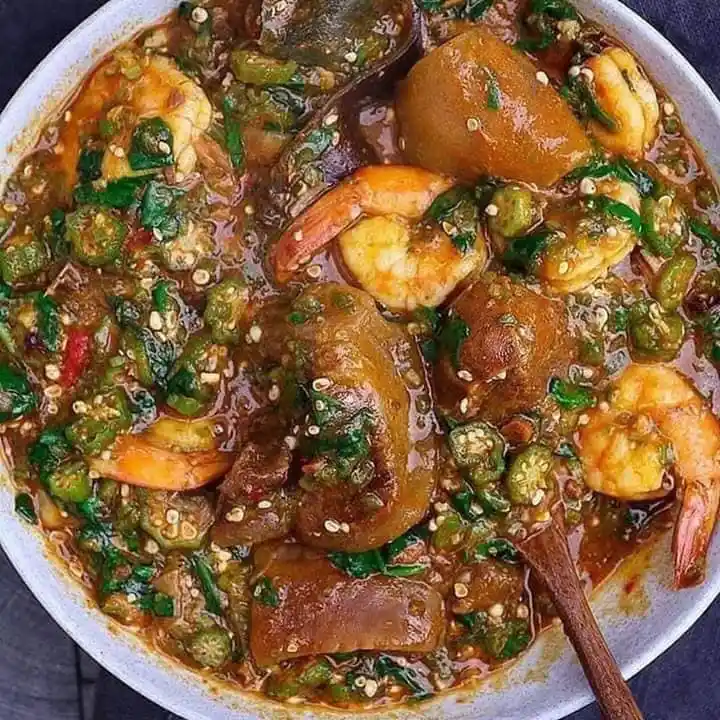

Okro Stew

Okro stew is a popular stew mostly paired with banku or akple.
The main ingredients used in okro stew is okra or okro. Other cooks prefer to add ayoyo.
Ingredients
- 7 pieces Okro
- 2 pieces large onions
- 200 mls red palm oil
- 2 pieces medium-sized onions
- tomato paste
- 4 pieces bell pepper (kpakposhito)
- 1 pound goat meat/chicken/herrings/crab/tuna/salmon
- 1 pound wele
Steps
- Wash meat and wele thoroughly and placed in a neat bowl
- Chop meat into desirable sizes and place in a cooking pot or saucepan
- Add little amount of water, place over medium heat and allow it to boil
- Chop onions, ginger and garlic.
- Blend chopped vegetables and pepper together until a smooth mixture is obtained.
- Set some of the blended mixture aside
- Pour the blended mixture into the meat pot and allow it to steam for 10 minutes
- Add some spices
- Wash okro and chop into smaller pieces.
- Put chopped okro into a clean saucepan, add water and simmer for about 6 minutes.
- Turn off heat and allow it to cool
- Pour some palm oil into a saucepan and place over medium heat.
- Add sliced onion and salted fish
- ook for about 4 minutes
- dd blended pepper, ginger and garlic and allow to simmer for about 5 minutes.
- Wash tomatoes, chop and add to the sauce
- Now add your steamed beef, boiled crab and wele to the mixture.
- Stir and leave it to cook for about 10 minutes.
- Pour into the mixture your cooked okro and stir thoroughly
- Add salt to taste.